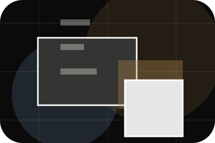
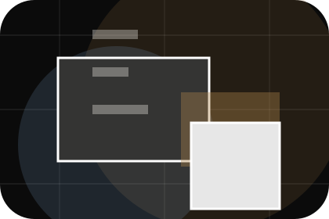
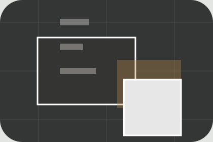

Agency
Open the agency route for story, philosophy, team so travel, tourism & destination experiences visitors can compare context, proof, and next steps.
Open AgencyHome / 01
Home opens as a clear travel decision hub: what Atlas offers, who it helps, why it matters, and which route to take first.
The first screen combines positioning, proof, primary action, and fast internal navigation, so people can act immediately or compare the rest of the home route with context.
Immersive trip hero
Select the closest route and Atlas keeps the next step, proof, and follow-up expectation aligned with wanderlust and practical planning.

Site atlas
This homepage is the working index for travel, tourism & destination experiences: it explains the offer, points to every deeper page, and keeps the final action visible without making the visitor hunt.
A travel-planning site with dark editorial hero, trip story cards, itinerary accordions, and bespoke enquiry. The page links problem, promise, services, process, proof, questions, support, legal routes, and conversion paths into one clear decision map.
Open the agency route for story, philosophy, team so travel, tourism & destination experiences visitors can compare context, proof, and next steps.
Open AgencyOpen the trips route for types, adventure, culture so travel, tourism & destination experiences visitors can compare context, proof, and next steps.
Open TripsOpen the places route for destinations, regions, highlights so travel, tourism & destination experiences visitors can compare context, proof, and next steps.
Open PlacesOpen the tours route for activities, levels, durations so travel, tourism & destination experiences visitors can compare context, proof, and next steps.
Open ToursOpen the planning route for consultation, customisation, budget so travel, tourism & destination experiences visitors can compare context, proof, and next steps.
Open PlanningOpen the pricing route for packages, quotes, deposits so travel, tourism & destination experiences visitors can compare context, proof, and next steps.
Open PricingOpen the stories route for stories, photos, guides so travel, tourism & destination experiences visitors can compare context, proof, and next steps.
Open StoriesOpen the faq route for visas, safety, weather so travel, tourism & destination experiences visitors can compare context, proof, and next steps.
Open FAQOpen the contact route for destination, dates, budget so travel, tourism & destination experiences visitors can compare context, proof, and next steps.
Open ContactReview the local assets, icons, OG images, and static handoff materials used by Atlas.
Open Asset SystemUse the full sitemap to recover any route and verify the whole Atlas structure.
Open SitemapRead the privacy route before sending personal details through the static form.
Open PrivacyManage consent and understand the privacy-safe analytics approach.
Open CookiesHome / 02
Dream adds editorial context to the home route, using the dark destination magazine structure to support wanderlust and practical planning before visitors choose a next step.
Atlas uses journey story cards and focused copy to make the decision easier to scan, aligning the section with wanderlust and practical planning rather than filling space.
Open AgencyDream gives the page a specific angle instead of repeating the navigation label.
The journey story cards show what to compare, what to avoid, and what matters most for travel, tourism & destination experiences visitors.
The final cue points to a useful internal route so the section keeps the journey moving.
Home / 03
Destination adds editorial context to the home route, using the dark destination magazine structure to support wanderlust and practical planning before visitors choose a next step.
Atlas uses journey story cards and focused copy to make the decision easier to scan, aligning the section with wanderlust and practical planning rather than filling space.
Open TripsDestination gives the page a specific angle instead of repeating the navigation label.
The journey story cards show what to compare, what to avoid, and what matters most for travel, tourism & destination experiences visitors.
The final cue points to a useful internal route so the section keeps the journey moving.
Home / 04
Promise defines the better state Atlas is built to create, with enough detail to make the promise believable.
A travel-planning site with dark editorial hero, trip story cards, itinerary accordions, and bespoke enquiry. The section grounds that direction in concrete benefits, visible tradeoffs, and a next route visitors can use when the promise feels relevant.
Open Places
Promise defines what becomes clearer, easier, or safer when Atlas is the chosen route.
Home / 05
Trips adds editorial context to the home route, using the dark destination magazine structure to support wanderlust and practical planning before visitors choose a next step.
Atlas uses journey story cards and focused copy to make the decision easier to scan, aligning the section with wanderlust and practical planning rather than filling space.
Open ToursTrips gives the page a specific angle instead of repeating the navigation label.
The journey story cards show what to compare, what to avoid, and what matters most for travel, tourism & destination experiences visitors.
The final cue points to a useful internal route so the section keeps the journey moving.
Home / 06
Tours adds editorial context to the home route, using the dark destination magazine structure to support wanderlust and practical planning before visitors choose a next step.
Atlas uses journey story cards and focused copy to make the decision easier to scan, aligning the section with wanderlust and practical planning rather than filling space.
Open PlanningTours gives the page a specific angle instead of repeating the navigation label.
The journey story cards show what to compare, what to avoid, and what matters most for travel, tourism & destination experiences visitors.
The final cue points to a useful internal route so the section keeps the journey moving.
Home / 07
Planning makes commercial comparison easier by showing fit, scope, and terms before travel visitors ask for the next step.
The layout keeps price-sensitive decisions honest: it separates starting scope, fuller delivery, and ongoing support so the visitor can ask a sharper question.
Open PricingAtlas frames planning around fit, scope, and terms so visitors can compare cost without losing the outcome.
Plan TripHome / 09
Questions handles buying doubts directly so visitors can understand timing, fit, limits, and the safest next step.
Answers are short by design: enough to remove hesitation, not so much that the page turns into documentation before the visitor can act.
Open ContactQuestions gives the page a specific angle instead of repeating the navigation label.
The journey story cards show what to compare, what to avoid, and what matters most for travel, tourism & destination experiences visitors.

The final cue points to a useful internal route so the section keeps the journey moving.
Atlas starts with a focused intake so the recommendation matches the visitor's context, risk, timing, and readiness.
Each route explains inclusions, exclusions, documents, timing, and the decision points that affect final delivery.
The theme uses dark destination magazine, journey story cards, and trip finder, destination filter, itinerary accordion rather than a shared template rhythm.
Immersive trip hero
Select the closest route and Atlas keeps the next step, proof, and follow-up expectation aligned with wanderlust and practical planning.
Travel plans may depend on visas, health rules, weather, operator availability, and insurance terms.
Home / 10
Atlas closes the home route with a clear action, a quick reminder of the value, and a low-friction way to plan a trip.
Visitors who are ready can use the primary action. Visitors who are still comparing can scan the section links, proof, and support routes before they plan a trip.
Plan TripThe final block keeps the choice simple: act now, compare one more proof route, or send enough detail for a focused response.
Plan Tripwanderlust and practical planning
A travel-planning site with dark editorial hero, trip story cards, itinerary accordions, and bespoke enquiry. Home ends with a direct path to plan a trip, plus enough context for visitors who still need to compare.

Plan Trip